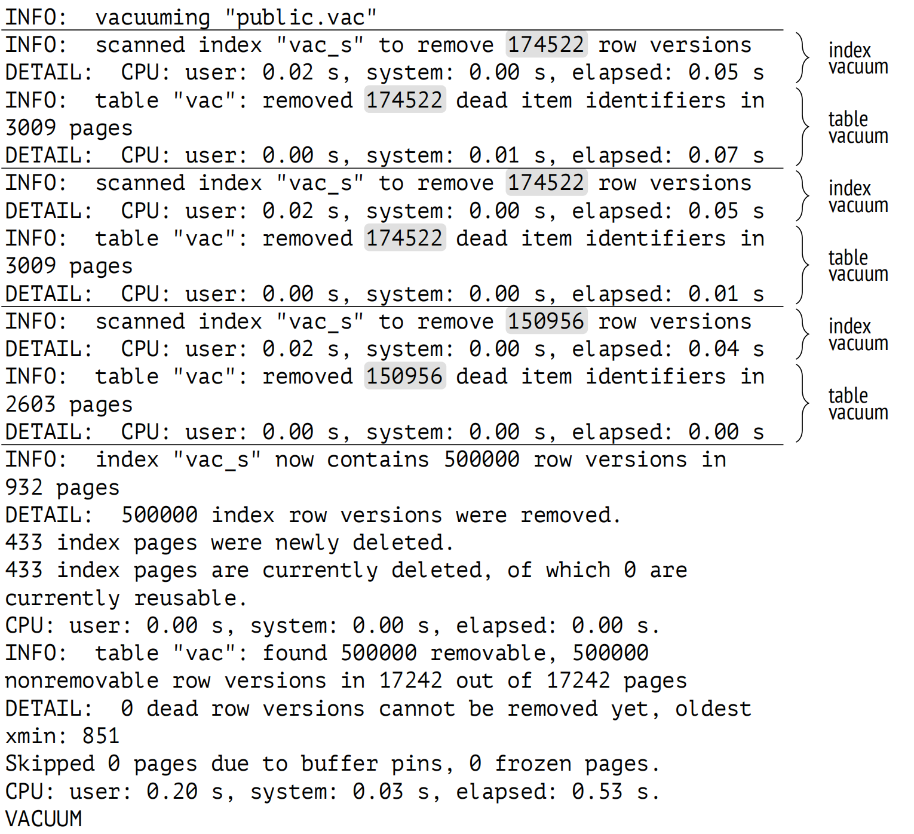

第 6 章：Vacuum 与 Autovacuum
6.1 Vacuum
页剪枝发生得非常快，但它只释放了部分潜在可以回收的空间。页剪枝在单个堆页面内工作，并且不涉及索引 (反之亦然，清理索引页面也不会影响表)。
例行清理 (Routine vacuuming) 1 是由 VACUUM 2 命令执行的主要清理过程。它会处理整个表，并移除过期的堆元组以及相应的所有索引条目。
清理过程与数据库系统中的其他进程并行运行。当进行清理时，表和索引可以以常规方式进行读取和写入 (但不允许同时执行比如 CREATE INDEX，ALTER TABLE 等命令)。
为了避免扫描额外的页面，PostgreSQL 会使用可见性映射。在可见性映射中跟踪的页面会被跳过，因为这些页面肯定只包含当前元组，因此只有未出现在映射中的页面才会被清理。如果清理后，页面中剩余的所有元组都超出了数据库视界，便会刷新可见性映射以包含此页面。
空闲空间映射也会更新，以反馈已清理的空间。
让我们创建一个带有索引的表：
=> CREATE TABLE vac(
id integer,
s char(100)
)
WITH (autovacuum_enabled = off);
=> CREATE INDEX vac_s ON vac(s);autovacuum_enabled 存储参数用于关闭自动清理；此处，我们仅出于实验的目的而关闭它，以精确控制清理的启动时间。
让我们插入一行数据并进行几次更新：
=> INSERT INTO vac(id,s) VALUES (1,'A');
=> UPDATE vac SET s = 'B';
=> UPDATE vac SET s = 'C';现在表里含有三个元组：
=> SELECT * FROM heap_page('vac',0);
ctid | state | xmin | xmax | hhu | hot | t_ctid
−−−−−−−+−−−−−−−−+−−−−−−−+−−−−−−−+−−−−−+−−−−−+−−−−−−−−
(0,1) | normal | 826 c | 827 c | | | (0,2)
(0,2) | normal | 827 c | 828 | | | (0,3)
(0,3) | normal | 828 | 0 a | | | (0,3)
(3 rows)每个元组都被索引引用：
=> SELECT * FROM index_page('vac_s',1);
itemoffset | htid | dead
−−−−−−−−−−−−+−−−−−−−+−−−−−−
1 | (0,1) | f
2 | (0,2) | f
3 | (0,3) | f
(3 rows)VACUUM 已删除所有死元组，仅留下了当前元组：
=> VACUUM vac;
=> SELECT * FROM heap_page('vac',0);
ctid | state | xmin | xmax | hhu | hot | t_ctid
−−−−−−−+−−−−−−−−+−−−−−−−+−−−−−−+−−−−−+−−−−−+−−−−−−−−
(0,1) | unused | | | | |
(0,2) | unused | | | | |
(0,3) | normal | 828 c | 0 a | | | (0,3)
(3 rows)如果是页剪枝，前两个指针会被认为是 dead 的，但此处它们是 unused 的状态，因为现在没有索引条目引用它们：
=> SELECT * FROM index_page('vac_s',1);
itemoffset | htid | dead
−−−−−−−−−−−−+−−−−−−−+−−−−−−
1 | (0,3) | f
(1 row)具有 unused 状态的指针被视为空闲指针，可以被新的行版本复用。
现在，堆页面出现在可见性映射中；我们可以使用 pg_visibility 扩展来检查这一点：
=> CREATE EXTENSION pg_visibility;
=> SELECT all_visible
FROM pg_visibility_map('vac',0);
all_visible
−−−−−−−−−−−−−
t
(1 row)页头中的属性也进行了更新，表明其所有元组在所有快照中都是可见的：
=> SELECT flags & 4 > 0 AS all_visible
FROM page_header(get_raw_page('vac',0));
all_visible
−−−−−−−−−−−−−
t
(1 row)6.2 再次审视数据库视界
VACUUM 基于数据库视界检测死元组。这个概念很基础，因此有必要再次回顾一下。
让我们从最开始重新我们的实验：
=> TRUNCATE vac;
=> INSERT INTO vac(id,s) VALUES (1,'A');
=> UPDATE vac SET s = 'B';但这一次，在更新行之前，我们将开启另一个事务，此事务将保持数据库视界 (几乎可以是任何事务，除了在读已提交隔离级别下执行的虚拟事务)。例如，这个事务可以修改另一个表中的一些行：
=> BEGIN; => UPDATE accounts SET amount = 0;
=> UPDATE vac SET s = 'C';现在表中含有三个元组，索引包含三个引用。让我们清理一下表，看看会有什么变化：
=> VACUUM vac;
=> SELECT * FROM heap_page('vac',0);
ctid | state | xmin | xmax | hhu | hot | t_ctid
−−−−−−−+−−−−−−−−+−−−−−−−+−−−−−−−+−−−−−+−−−−−+−−−−−−−−
(0,1) | unused | | | | |
(0,2) | normal | 833 c | 835 c | | | (0,3)
(0,3) | normal | 835 c | 0 a | | | (0,3)
(3 rows)
=> SELECT * FROM index_page('vac_s',1);
itemoffset | htid | dead
−−−−−−−−−−−−+−−−−−−−+−−−−−−
1 | (0,2) | f
2 | (0,3) | f
(2 rows)虽然前一次实验只在页面中留下了一个元组，但这一次我们有两个元组：VACUUM 判断行版本 (0,2) 还不能移除。原因是数据库视界，在这个案例中，是由一个未完成的事务定义的：
=> SELECT backend_xmin FROM pg_stat_activity WHERE pid = pg_backend_pid(); backend_xmin −−−−−−−−−−−−−− 834 (1 row)
我们可以在调用 VACUUM 时使用 verbose 子句来观察发生了什么：
=> VACUUM VERBOSE vac;
INFO: vacuuming "public.vac"
INFO: table "vac": found 0 removable, 2 nonremovable row versions
in 1 out of 1 pages
DETAIL: 1 dead row versions cannot be removed yet, oldest xmin: 834
Skipped 0 pages due to buffer pins, 0 frozen pages.
CPU: user: 0.00 s, system: 0.00 s, elapsed: 0.00 s.
VACUUMVACUUM 的输出显示了以下信息：
- VACUUM 没有检测到可以移除的元组 (
0 REMOVABLE)。 - 两个元组不能被移除 (
2 NONREMOVABLE)。 - 其中一个不可移除的元组状态是 dead (
1 DEAD)，其他的正在使用。 - VACUUM 当前所遵循的视界 (
OLDEST XMIN) 是活跃事务的视界。
一旦活跃事务完成，数据库视界将向前移动，VACUUM 便可以继续：
=> COMMIT;
=> VACUUM VERBOSE vac;
INFO: vacuuming "public.vac"
INFO: scanned index "vac_s" to remove 1 row versions
DETAIL: CPU: user: 0.00 s, system: 0.00 s, elapsed: 0.00 s
INFO: table "vac": removed 1 dead item identifiers in 1 pages
DETAIL: CPU: user: 0.00 s, system: 0.00 s, elapsed: 0.00 s
INFO: index "vac_s" now contains 1 row versions in 2 pages
DETAIL: 1 index row versions were removed.
0 index pages were newly deleted.
0 index pages are currently deleted, of which 0 are currently
reusable.
CPU: user: 0.00 s, system: 0.00 s, elapsed: 0.00 s.
INFO: table "vac": found 1 removable, 1 nonremovable row versions
in 1 out of 1 pages
DETAIL: 0 dead row versions cannot be removed yet, oldest xmin: 836
Skipped 0 pages due to buffer pins, 0 frozen pages.
CPU: user: 0.00 s, system: 0.00 s, elapsed: 0.00 s.
VACUUMVACUUM 检测并删除了超出新的数据库视界的死元组。
现在页面不包含过期的行版本，剩下的唯一行版本是当前版本：
=> SELECT * FROM heap_page('vac',0);
ctid | state | xmin | xmax | hhu | hot | t_ctid
−−−−−−−+−−−−−−−−+−−−−−−−+−−−−−−+−−−−−+−−−−−+−−−−−−−−
(0,1) | unused | | | | |
(0,2) | unused | | | | |
(0,3) | normal | 835 c | 0 a | | | (0,3)
(3 rows)索引也只包含一个条目：
=> SELECT * FROM index_page('vac_s',1);
itemoffset | htid | dead
−−−−−−−−−−−−+−−−−−−−+−−−−−−
1 | (0,3) | f
(1 row)6.3 清理阶段
清理的机制似乎很简单，但这种印象具有误导性。毕竟，表和索引都必须同时处理，且不能阻塞其他进程。为了实现这样的操作，每个表的清理都分为几个阶段 3 进行。
一切都从扫描表开始，寻找死元组；如果找到，首先从索引中移除它们，然后从表自身中移除。如果一次性需要清理太多的死元组，那么会重复此过程。在最后阶段，可能会执行堆截断。
6.3.1 堆扫描
在第一阶段，执行堆扫描 4。扫描过程会考虑可见性映射：在此映射中跟踪的所有页面都会被跳过，因为这些页面肯定不包含过期的元组。如果一个元组超出了视界且不再需要，那么其 ID 将被添加到一个特殊的 tid 数组中。这些元组还不能被移除，因为它们仍然可能被索引引用。
tid 数组位于 VACUUM 进程的本地内存中；分配的内存块大小由 maintenance_work_mem 参数定义。整个内存块是一次性分配的，而不是按需分配。但是，分配的内存永远不会超过最坏情况下所需的容量，因此如果表很小，清理操作可能使用的内存比此参数指定的要少。
6.3.2 索引清理
第一阶段可能有两个结果：要么表全部扫描了，要么在此操作完成之前，为 tid 数组分配的内存已满。无论哪种情况，索引清理 5 都会开始。在此阶段，表上创建的每个索引都会被完整扫描，以找到所有引用 tid 数组中记录的元组条目。这些条目将从索引页面中移除。
索引可以通过索引键帮助你快速定位到一个堆元组，但还没有办法通过相应的元组 ID 快速找到索引条目。这个功能目前正在为 B 树实现中 6，但这项工作尚未完成。
如果有多个大于 min_parallel_index_scan_size 的索引，那么这些索引可以被后台工作进程并行清理。除非子句 parallel N 明确指定了并行度级别，否则 VACUUM 会为每个合适的索引启动一个工作进程 (在后台工作进程数量的总体限制内) 7。一个索引不能由多个工作进程处理。
在索引清理阶段，PostgreSQL 会更新空闲空间映射并计算清理的统计信息。但是，如果仅插入行 (既不删除也不更新)，那么会跳过此阶段，因为在此情况下表中没有死元组。那么，只有在最后，作为独立的索引规整 (index cleanup) 8 阶段的一部分，才会强制进行一次索引扫描。
索引清理阶段在索引中不再保留对过期堆元组的引用，但这些元组本身仍然存在于表中。这是正常的：索引扫描无法找到任何死元组，而对表的顺序扫描依赖于可见性规则将它们过滤掉。
6.3.3 堆清理
然后开始堆清理阶段 9。表将被再次扫描，以移除 tid 数组中记录的元组并释放相应的指针。由于所有相关的索引引用已经被移除，这个操作现在可以安全地进行。
VACUUM 回收的空间反映在空闲空间映射中，而现在仅包含在所有快照中均可见的当前元组的页面，将在可见性映射中进行标记。
如果在堆扫描阶段没有完整读取表，那么会清空 tid 数组，并从上次停止的地方恢复，继续堆扫描。
6.3.4 堆截断
已清理的堆页面包含一些空闲空间；有时，你可能会幸运地清除整个页面。如果文件末尾有若干个空页面，那么清理进程可以"咬掉"这条尾巴，并将回收的空间返回给操作系统。这发生在堆截断 10 期间，即清理的最后阶段。
堆截断需要获取表上短暂的排它锁。为了避免阻塞其他进程太久，尝试获取锁的时间不超过 5 秒。
由于需要锁表，因此仅当尾部空闲空间至少占表大小的 1/16 或达到 1000 页的长度时，才会执行截断。这些阈值是硬编码的，无法配置。
如果，尽管采取了这些预防措施，表锁仍然可能会导致问题，那么可以使用 vacuum_truncate 和 toast.vacuum_truncate 存储参数彻底禁用截断。
6.4 分析
在讨论清理时，我们必须提到另一个与之密切相关的任务，即使它们之间没有正式的联系。这便是分析 11，或者说为查询规划器收集统计信息。收集的统计信息包括表中的行数 (pg_class.reltuples) 和页数(pg_class.relpages)、列中的数据分布情况以及一些其他信息。
你可以使用 ANALYZE 12 命令手动运行分析，或通过调用 VACUUM ANALYZE 将其与 VACUUM 相结合。不过这两个任务还是顺序执行的，所以性能方面没有区别。
历史上，VACUUM ANALYZE 首先出现在 6.1 版本中，而单独的 ANALYZE 命令直到 7.2 版本才实现。在早期版本中，统计信息是通过一个 TCL 脚本收集的。
自动清理和自动分析的设置方式类似，因此有必要一起讨论它们。
6.5 自动清理和分析
除非数据库视界被长时间保持，否则例行清理足以应付它的工作。但是我们需要多久调用一次 VACUUM 命令？
如果一个频繁更新的表很少清理，那么其大小会比预期的要大。此外，它可能会积累太多的更改，然后下一次 VACUUM 操作将不得不对索引进行多次遍历。
如果表清理得太频繁，服务器将忙于维护而不是有用的工作。
此外，典型的工作负载可能会随着时间而变化，因此就算有一个固定的清理计划也无济于事：表更新得越频繁，就越需要更频繁地进行清理。
这个问题由自动清理 13 解决，它根据表更新的强度启动清理和分析进程。
6.5.1 自动清理机制
启用自动清理时 (autovacuum 配置参数为 on) ，系统中始终运行着自动清理守护进程。该进程定义了自动清理的周期，并根据统计信息维护着"活跃"数据库的列表。如果启用了 track_counts 参数，则会收集此类统计信息。不要关闭这些参数，否则自动清理将无法工作。
每隔 autovacuum_naptime 时间，自动清理守护进程就会为列表中的每个活跃数据库启动一个自动清理工作进程 14 (这些工作进程如往常一样由 postmaster 创建) 。因此，如果集簇中有 N 个活跃数据库，那么在 autovacuum_naptime 时间间隔内将生成 N 个工作进程。但是，并行运行的自动清理工作进程总数不能超过 autovacuum_max_workers 参数定义的阈值。
自动清理工作进程与常规的后台工作进程十分相似，但它们比这种通用的任务管理机制出现得早得多。自动清理的实现决定保持不变，因此自动清理工作进程不使用 max_worker_processes 槽。
一旦启动，后台工作进程便会连接到指定的数据库，并构建两个列表：
- 所有需要清理的表、物化视图和 TOAST 表的列表
- 所有需要分析的表和物化视图的列表 (因为 TOAST 表总是通过索引访问，所以不会进行分析)
然后逐一清理或分析选定的对象 (或同时进行两种操作)，一旦工作完成，工作进程就会终止。
自动清理的工作方式类似于 VACUUM 命令发起的手动清理，但有一些细微差别：
-
手动清理会在 maintenance_work_mem 所指定大小的内存块中累积元组 ID。但是，对自动清理使用相同的限制是不可取的，因为这会导致过多的内存消耗：可能有多个自动清理工作进程同时运行，每个工作进程都会同时获得 maintenance_work_mem 大小的内存。相反，PostgreSQL 为自动清理进程提供了单独的内存限制，该限制由 autovacuum_work_mem 参数定义。
默认情况下，autovacuum_work_mem 参数回退到常规 maintenance_work_mem 参数的限制，因此如果 autovacuum_max_workers 的值较高，你可能需要相应地调整 autovacuum_work_mem 的值。
-
只能通过手动清理才能并发处理表上创建的多个索引；使用自动清理会导致大量并行进程，因此不允许这样做。
如果工作进程未能在 autovacuum_naptime 时间间隔内完成所有预期任务，那么自动清理守护进程会在该数据库中生成另外一个工作进程，并行运行。第二个工作进程会创建自己的待清理和待分析的对象列表，并开始处理它们。表级别层面没有并行性；只有不同的表可以同时被处理。
6.5.2 哪些表需要被清理？
你可以在表级别禁用自动清理 — 尽管很难想象为什么需要这样做。为此，提供了两个存储参数，一个用于常规的表，另一个用于 TOAST 表：
- autovacuum_enabled
- toast.autovacuum_enabled
通常情况下，自动清理由累积的死元组数量或新行的插入数量触发。
死元组累积。统计信息收集器会不断计算死元组数量；当前死元组的数量显示在名为 pg_stat_all_tables 的系统表中。
当死元组超过以下两个参数所定义的阈值时，则必须清除死元组：
- autovacuum_vacuum_threshold，指定死元组的数量 (绝对值)
- autovacuum_vacuum_scale_factor，设置表中死元组的比例
如果满足以下条件，则需要进行清理：pg_stat_all_tables.n_dead_tup > autovacuum_vacuum_threshold + autovacuum_vacuum_scale_factor × pg_class.reltuples。
此处主要参数当然是 autovacuum_vacuum_scale_factor：它的值对于大表很重要 (而且大表可能会导致大部分问题)。默认值 20% 似乎太大，可能需要大幅减小。
对于不同的表，最佳参数值可能会有所不同：这很大程度上取决于表的大小和工作负载的类型。设置合理的初始值是有意义的，然后使用存储参数为特定的表覆盖这些值：
- autovacuum_vacuum_threshold 和 toast.autovacuum_vacuum_threshold
- autovacuum_vacuum_scale_factor 和 toast.autovacuum_vacuum_scale_factor
行插入。如果仅插入行，而不删除或更新行，那么表中不会包含死元组。但是这样的表也应该被清理以提前冻结堆元组，并更新可见性映射 (从而允许使用仅索引扫描)。
如果自上次清理以来插入的行数超过了另一对类似参数所定义的阈值，那么表便会被清理：
- autovacuum_vacuum_insert_threshold
- autovacuum_vacuum_insert_scale_factor
公式如下：
pg_stat_all_tables.n_ins_since_vacuum > autovacuum_vacuum_insert_threshold + autovacuum_vacuum_insert_scale_factor × pg_class.reltuples
与前面的示例一样，你可以使用存储参数在表级别覆盖这些值：
- autovacuum_vacuum_insert_threshold 和 TOAST 相对应的参数
- autovacuum_vacuum_insert_scale_factor 和 TOAST 相对应的参数
6.5.3 哪些表需要被分析？
自动分析只需要处理修改过的行，因此计算比自动清理要简单一些。
如果自上次分析以来修改的行数超过了以下两个配置参数所定义的阈值，那么就需要对表进行分析：
- autovacuum_analyze_threshold
- autovacuum_analyze_scale_factor
如果满足以下条件，则会触发自动分析：pg_stat_all_tables.n_mod_since_analyze > autovacuum_analyze_threshold + autovacuum_analyze_scale_factor × pg_class.reltuples
要覆盖特定表的自动分析设置，你可以使用同名存储参数：
- autovacuum_analyze_threshold
- autovacuum_analyze_scale_factor
由于不会分析 TOAST 表，因此没有相应参数。
6.5.4 自动清理实践
为了具体描述本节所述内容，让我们创建两个视图以显示当前哪些表需要被清理和分析 15。这些视图中使用的函数返回当前传递参数的值，同时考虑到这个值可以在表级别被重新定义：
=> CREATE FUNCTION p(param text, c pg_class) RETURNS float
AS $$
SELECT coalesce(
-- use storage parameter if set
(SELECT option_value
FROM pg_options_to_table(c.reloptions)
WHERE option_name = CASE
-- for TOAST tables the parameter name is different
WHEN c.relkind = 't' THEN 'toast.' ELSE ''
END || param
),
-- else take the configuration parameter value
current_setting(param)
)::float;
$$ LANGUAGE sql;这是与 VACUUM 相关的视图：
=> CREATE VIEW need_vacuum AS
WITH c AS (
SELECT c.oid,
greatest(c.reltuples, 0) reltuples,
p('autovacuum_vacuum_threshold', c) threshold,
p('autovacuum_vacuum_scale_factor', c) scale_factor,
p('autovacuum_vacuum_insert_threshold', c) ins_threshold,
p('autovacuum_vacuum_insert_scale_factor', c) ins_scale_factor
FROM pg_class c
WHERE c.relkind IN ('r','m','t')
)
SELECT st.schemaname || '.' || st.relname AS tablename,
st.n_dead_tup AS dead_tup,
c.threshold + c.scale_factor * c.reltuples AS max_dead_tup,
st.n_ins_since_vacuum AS ins_tup,
c.ins_threshold + c.ins_scale_factor * c.reltuples AS max_ins_tup,
st.last_autovacuum
FROM pg_stat_all_tables st
JOIN c ON c.oid = st.relid;max_dead_tup 列显示了触发自动清理的死元组数量，而 max_ins_tup 列则显示了与插入相关的阈值。
以下是一个类似的 analyze 视图：
=> CREATE VIEW need_analyze AS
WITH c AS (
SELECT c.oid,
greatest(c.reltuples, 0) reltuples,
p('autovacuum_analyze_threshold', c) threshold,
p('autovacuum_analyze_scale_factor', c) scale_factor
FROM pg_class c
WHERE c.relkind IN ('r','m')
)
SELECT st.schemaname || '.' || st.relname AS tablename,
st.n_mod_since_analyze AS mod_tup,
c.threshold + c.scale_factor * c.reltuples AS max_mod_tup,
st.last_autoanalyze
FROM pg_stat_all_tables st
JOIN c ON c.oid = st.relid;max_mod_tup 列显示了触发自动分析的阈值。
为了加快实验，我们将每秒启动一次自动清理：
=> ALTER SYSTEM SET autovacuum_naptime = '1s';
=> SELECT pg_reload_conf();让我们截断 vac 表，然后插入 1000 行。请注意，自动清理在表级别层面被关闭了。
=> TRUNCATE TABLE vac;
=> INSERT INTO vac(id,s)
SELECT id, 'A' FROM generate_series(1,1000) id;此处是与 vacuum 相关的视图内容：
=> SELECT * FROM need_vacuum WHERE tablename = 'public.vac' \gx
−[ RECORD 1 ]−−−+−−−−−−−−−−−
tablename | public.vac
dead_tup | 0
max_dead_tup | 50
ins_tup | 1000
max_ins_tup | 1000
last_autovacuum |实际的阈值是 max_dead_tup = 50，尽管上面列出的公式表明它应该是 50 + 0.2 × 1000 = 250。问题在于，由于 INSERT 命令没有更新统计信息，所以这个表的统计信息还不可用。
=> SELECT reltuples FROM pg_class WHERE relname = 'vac';
reltuples
−−−−−−−−−−−
−1
(1 row)pg_class.reltuples 值被设为 -1；这个替代零值的特殊常数用于区分没有任何统计信息的表和已经分析过的真正的空表。为了方便计算，负值被当做零值处理，因此值是 50 + 0.2 × 0 = 50。
max_ins_tup 的值是 1000，与预期的 1200 不同，原因也是一样的。
让我们看一下 analyze 视图：
=> SELECT * FROM need_analyze WHERE tablename = 'public.vac' \gx
−[ RECORD 1 ]−−−−+−−−−−−−−−−−
tablename | public.vac
mod_tup | 1006
max_mod_tup | 50
last_autoanalyze |我们已经更新了 (在这个例子中是插入) 1000 行； 因此已经超过了阈值，由于表的大小未知，所以当前被设置为 50 。这意味着当我们启用自动分析时，将会立即触发自动分析：
=> ALTER TABLE vac SET (autovacuum_enabled = on);一旦表分析完成，阈值将被重置为合适的值：150 行。
=> SELECT reltuples FROM pg_class WHERE relname = 'vac';
reltuples
−−−−−−−−−−−
1000
(1 row)
=> SELECT * FROM need_analyze WHERE tablename = 'public.vac' \gx
−[ RECORD 1 ]−−−−+−−−−−−−−−−−−−−−−−−−−−−−−−−−−−−
tablename | public.vac
mod_tup | 0
max_mod_tup | 150
last_autoanalyze | 2023−03−06 14:00:45.533464+03让我们回到自动清理：
=> SELECT * FROM need_vacuum WHERE tablename = 'public.vac' \gx
−[ RECORD 1 ]−−−+−−−−−−−−−−−
tablename | public.vac
dead_tup | 0
max_dead_tup | 250
ins_tup | 1000
max_ins_tup | 1200
last_autovacuum |基于分析统计的实际表大小，max_dead_tup 和 max_ins_tup 的值也已更新。
如果满足以下至少一个条件，将开始进行清理操作：
- 累计超过 250 个死元组
- 插入表中的行数超过了 200
让我们再次关闭自动清理 ，并更新 251 行，使阈值超过 1：
=> ALTER TABLE vac SET (autovacuum_enabled = off);
=> UPDATE vac SET s = 'B' WHERE id <= 251;
=> SELECT * FROM need_vacuum WHERE tablename = 'public.vac' \gx
−[ RECORD 1 ]−−−+−−−−−−−−−−−
tablename | public.vac
dead_tup | 251
max_dead_tup | 250
ins_tup | 1000
max_ins_tup | 1200
last_autovacuum |现在触发条件已满足。让我们启用自动清理，短暂过后，我们便会看到表已被处理，并且其使用统计信息已被重置：
=> ALTER TABLE vac SET (autovacuum_enabled = on);
=> SELECT * FROM need_vacuum WHERE tablename = 'public.vac' \gx
−[ RECORD 1 ]−−−+−−−−−−−−−−−−−−−−−−−−−−−−−−−−−−
tablename | public.vac
dead_tup | 0
max_dead_tup | 250
ins_tup | 0
max_ins_tup | 1200
last_autovacuum | 2023−03−06 14:00:51.736815+036.6 管理负载
在页级别操作，清理不会阻塞其他进程；但尽管如此，它仍会增加系统负载，并且可能对性能产生明显影响。
6.6.1 Vacuum 限流
为了控制清理的强度，PostgreSQL 会在处理表的过程中定期暂停。在完成大约 vacuum_cost_limit 个单位工作后，进程会进入休眠状态，并在 vacuum_cost_delay 时间间隔内保持空闲。
vacuum_cost_delay 的默认值为 0，意味着例行清理实际上从不休眠，因此 vacuum_cost_limit 的确切值并没有区别。这基于如果管理员不得不手动清理，他们可能希望尽快完成的假设。
如果设置了睡眠时间，那么每当在缓冲区缓存中的页面处理上花费了 vacuum_cost_limit 个单位工作后，进程就会暂停。如果在缓冲区缓存中找到页面，那么每个页面读取的成本预估为 vacuum_cost_page_hit 个单位，否则为 vacuum_cost_page_miss 16。如果一个干净的页面被 VACUUM 弄脏了，它会增加额外的 vacuum_cost_page_dirty 单位 17。
如果保持 vacuum_cost_limit 参数的默认值，VACUUM 在最佳情况下每个周期最多可以处理 200 个页面 (如果所有页面都被缓存，并且没有页面被 VACUUM 弄脏)，在最坏的情况下只能处理 9 个页面 (如果所有页面都从磁盘读取，并且变脏了)。
6.6.2 Autovacuum 限流
Autovacuum 限流 18 和 VACUUM 限流十分类似。但是，Autovacuum 可以以不同的强度运行，因为它有自己的一套参数：
- autovacuum_vacuum_cost_limit
- autovacuum_vacuum_cost_delay
如果这些参数中的任何一个设置为 -1，那么便会回退到常规 VACUUM 相应的参数。 因此，默认情况下，autovacuum_vacuum_cost_limit 参数依赖于 vacuum_cost_limit 的值。
在 12 版本之前，autovacuum_vacuum_cost_delay 的默认值为 20 ms，这会导致在现代硬件上的性能非常之差。
每个周期内，Autovacuum 的工作单位限制在 autovacuum_vacuum_cost_limit，并且由于此限制在所有工作进程之间共享，因此对系统的总体影响大致相同，无论其数量如何。因此，如果你需要加快自动清理的速度，那么 autovacuum_max_workers 和 autovacuum_vacuum_cost_limit 的值都应该按比例增加。
如果需要，你可以通过设置以下存储参数来覆盖特定表的这些设置：
- autovacuum_vacuum_cost_delay 和 toast.autovacuum_vacuum_cost_delay
- autovacuum_vacuum_cost_limit 和 toast.autovacuum_vacuum_cost_limit
6.7 监控
如果对清理操作进行监控，你可以检测到无法一次性移除死元组的情况，因为对这些死元组的引用不适合 maintenance_work_mem 内存块。在这种情况下，所有索引将不得不被完全扫描多次。对于大表来说，这可能需要相当长的时间，从而对系统造成显著负载。尽管查询不会被阻塞，但额外的 I/O 操作也会严重限制系统的吞吐量。
此类问题可以通过更频繁地清理表 (以便每次只需清理较少的元组) 或分配更多的内存来改善。
6.7.1 监控 Vacuum
当使用 VERBOSE 子句运行时，VACUUM 命令执行清理并显示状态报告信息，pg_stat_progress_vacuum 视图显示了已启动进程的当前状态。
分析也有类似的视图 (pg_stat_progress_analyze)，尽管它通常执行得非常快并且不太可能导致问题。
让我们在表中插入更多的行，并全部更新，这样 VACUUM 就需要运行相当长的一段时间：
=> TRUNCATE vac;
=> INSERT INTO vac(id,s)
SELECT id, 'A' FROM generate_series(1,500000) id;
=> UPDATE vac SET s = 'B';出于演示的目的，我们将分配给 tid 数组的内存限制为 1 MB：
=> ALTER SYSTEM SET maintenance_work_mem = '1MB';
=> SELECT pg_reload_conf();然后启动 VACUUM 命令，并在 VACUUM 运行时多次查询 pg_stat_progress_vacuum 视图：
=> VACUUM VERBOSE vac;=> SELECT * FROM pg_stat_progress_vacuum \gx −[ RECORD 1 ]−−−−−−+−−−−−−−−−−−−−−−−−− pid | 14531 datid | 16391 datname | internals relid | 16479 phase | vacuuming indexes heap_blks_total | 17242 heap_blks_scanned | 3009 heap_blks_vacuumed | 0 index_vacuum_count | 0 max_dead_tuples | 174761 num_dead_tuples | 174522 => SELECT * FROM pg_stat_progress_vacuum \gx −[ RECORD 1 ]−−−−−−+−−−−−−−−−−−−−−−−−− pid | 14531 datid | 16391 datname | internals relid | 16479 phase | vacuuming indexes heap_blks_total | 17242 heap_blks_scanned | 17242 heap_blks_vacuumed | 6017 index_vacuum_count | 2 max_dead_tuples | 174761 num_dead_tuples | 150956
该视图主要显示了：
- phase — 当前清理阶段的名称 (我描述了主要的几个阶段，但实际上还有更多 19)
- heap_blks_total — 表中的页面总数
- heap_blks_scanned — 已扫描的页面数量
- heap_blks_vacuumed —已清理的页面数量
- index_vacuum_count — 索引扫描的次数
整体的清理进度由 heap_blks_vacuumed 与 heap_blks_total 的比率所定义，但你必须记住，由于索引扫描，这个比率会间歇性变化。事实上，更重要的是要关注清理的循环次数：如果这个值大于 1，说明分配的内存不足以一次性完成清理。
你可以在 VACUUM VERBOSE 命令的输出中看到整个过程，此时命令已经完成了：
总而言之，进行了 3 次索引扫描； 每次扫描最多移除了 174522 个指向死元组的指针。这个值由能放入 maintenance_work_mem 中的 TID 数组指针的数量 (每个指针需要 6 个字节) 所定义。可能的最大大小由 pg_stat_progress_vacuum.max_dead_tuples 显示，但实际使用的空间总是要稍小一些。这保证了当读取下一个页面时，无论这个页面中有多少指向死元组的指针，都将适合剩余的内存。
6.7.2 监控 Autovacuum
监控 autovacuum 的主要方式是将其状态信息 (类似于 VACUUM VERBOSE 命令的输出) 打印到服务器日志中，以供进一步的分析。如果 log_autovacuum_min_duration 参数设置为零，则记录所有 autovacuum 的运行状况：
=> ALTER SYSTEM SET log_autovacuum_min_duration = 0;
=> SELECT pg_reload_conf();
=> UPDATE vac SET s = 'C';
UPDATE 500000postgres$ tail -n 13 /home/postgres/logfile
2023−03−06 14:01:13.727 MSK [17351] LOG: automatic vacuum of table
"internals.public.vac": index scans: 3
pages: 0 removed, 17242 remain, 0 skipped due to pins, 0
skipped frozen
tuples: 500000 removed, 500000 remain, 0 are dead but not
yet removable, oldest xmin: 853
index scan needed: 8622 pages from table (50.01% of total)
had 500000 dead item identifiers removed
index "vac_s": pages: 1428 in total, 496 newly deleted, 929
currently deleted, 433 reusable
avg read rate: 12.404 MB/s, avg write rate: 14.810 MB/s
buffer usage: 46038 hits, 5670 misses, 6770 dirtied
WAL usage: 40390 records, 15062 full page images, 89188595
bytes
system usage: CPU: user: 0.31 s, system: 0.33 s, elapsed:
3.57 s
2023−03−06 14:01:14.117 MSK [17351] LOG: automatic analyze of table
"internals.public.vac"
avg read rate: 41.081 MB/s, avg write rate: 0.020 MB/s
buffer usage: 15355 hits, 2035 misses, 1 dirtied
system usage: CPU: user: 0.14 s, system: 0.00 s, elapsed:
0.38 s为了跟踪需要被清理和分析的表列表，你可以使用我们已经审阅过的 need_vacuum 和 need_analyze 视图。如果此列表增长，这意味着自动清理无法应对负载，则需要通过减小间隔 (autovacuum_vacuum_cost_delay) 或者增加间隔内完成的工作量 (autovacuum_vacuum_cost_limit) 来加速清理。同时，并行度也可以增加 (autovacuum_max_workers)。
-
postgresql.org/docs/14/routine-vacuuming.html ↩︎
-
postgresql.org/docs/14/sql-vacuum.htmll
backend/commands/vacuum.c ↩︎ -
backend/access/heap/vacuumlazy.c, heap_vacuum_rel function ↩︎
-
backend/access/heap/vacuumlazy.c, lazy_scan_heap function ↩︎
-
backend/access/heap/vacuumlazy.c, lazy_vacuum_all_indexes function ↩︎
-
commitfest.postgresql.org/21/1802 ↩︎
-
postgresql.org/docs/14/bgworker.html ↩︎
-
backend/access/heap/vacuumlazy.c, lazy_cleanup_all_indexes function
backend/access/nbtree/nbtree.c, btvacuumcleanup function ↩︎ -
backend/access/heap/vacuumlazy.c, lazy_vacuum_heap function ↩︎
-
backend/access/heap/vacuumlazy.c, lazy_truncate_heap function ↩︎
-
postgresql.org/docs/14/routine-vacuuming.html#VACUUM-FOR-STATISTICS ↩︎
-
backend/commands/analyze.c ↩︎
-
postgresql.org/docs/14/routine-vacuuming.html#AUTOVACUUM ↩︎
-
backend/postmaster/autovacuum.c ↩︎
-
backend/postmaster/autovacuum.c, relation_needs_vacanalyze function ↩︎
-
backend/storage/buffer/bufmgr.c, ReadBuffer_common function ↩︎
-
backend/storage/buffer/bufmgr.c, MarkBufferDirty function ↩︎
-
backend/postmaster/autovacuum.c, autovac_balance_cost function ↩︎
-
postgresql.org/docs/14/progress-reporting.html#VACUUM-PHASES ↩︎